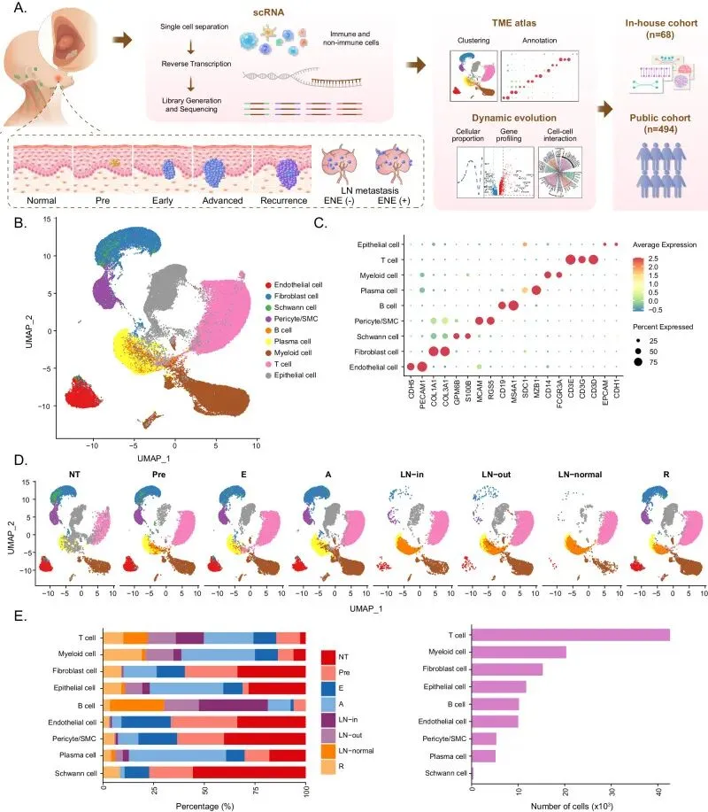
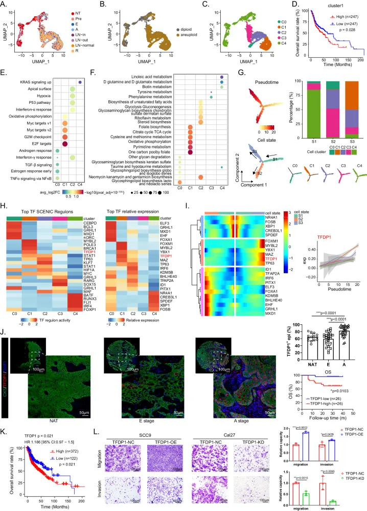
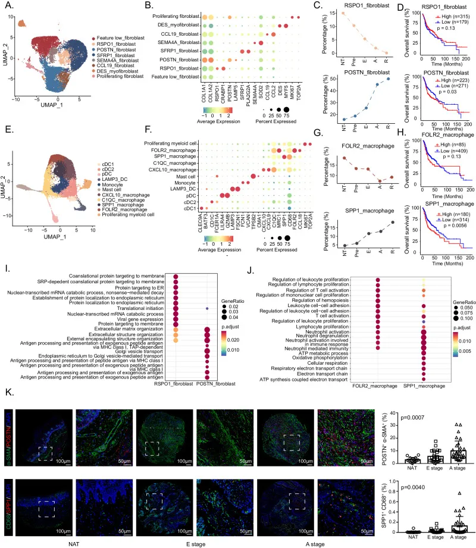
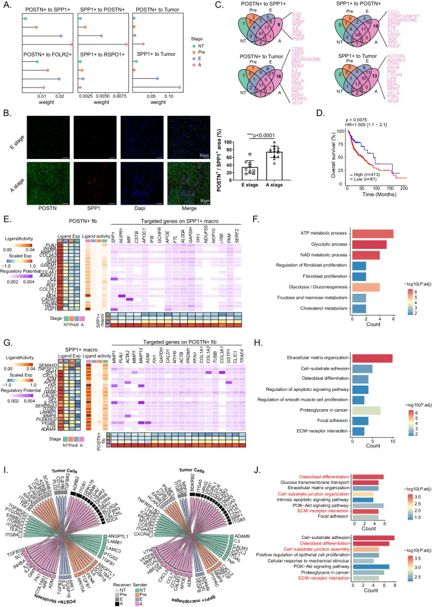
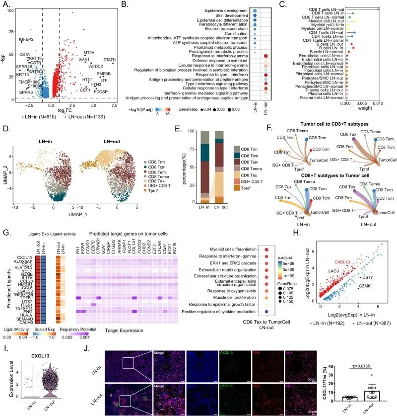

图谱类文章还是可以发《NC》
原文：https://mp.weixin.qq.com/s?__biz=MzAwMzIzOTk5OQ==&mid=2247532149&idx=1&sn=7e12b8e5259d4042eacd40e4fd89036d&chksm=9b3c0725ac4b8e33113fc70ae00e2ec6b77d3678638ef9ee799682d03bf18f71636e18406c11#rd 合集：文献速递
一、写在前面
本次分享的是2024年发布于《Nature communications》的文章（IF：15.7）“Single cell deciphering of progression trajectories of the tumor ecosystem in head and neck cancer” ，从标题就可以看出来（有点像综述的标题），其实该文并没有汇聚到特定细胞亚群、通路、基因。不过，优质的图谱类文章，把亚群梳理好，该做的进阶分析做一做。DOI: 10.1038/s41467-024-46912-6
链接： https://pubmed.ncbi.nlm.nih.gov/38519500/
** **
头颈部鳞状细胞癌是全球 第六大常见癌症，为了更好地表征肿瘤进展轨迹，作者对正常组织、癌前组织、早期、晚期癌组织、淋巴结和复发性肿瘤组织样本进行单细胞RNA测序。作者确定了恶性上皮细胞和TFDP1调控的致瘤上皮亚簇的转录发育轨迹。此外，本文发现POSTN+成纤维细胞和SPP1+巨噬细胞的浸润随着肿瘤进展逐渐增加;它们与恶性细胞的相互作用或相互作用也逐渐增加，以塑造结缔组织增生微环境并重新编程恶性细胞以促进肿瘤进展。该文证明，在淋巴结转移过程中，具有高CXCL13表达的耗竭CD8+ T细胞与肿瘤细胞强烈相互作用，从而获得更具侵袭性的结外扩增表型。
然后就是套话，用在任何肿瘤研究都不违和：作者描绘了原发性和复发性肿瘤中恶性上皮细胞的鲜明特征，为不同阶段肿瘤靶向治疗的精准选择提供了理论基础。综上所述，本研究为头颈部鳞状细胞癌的起始、进展、淋巴结转移和复发过程中的上皮和微环境重编程提供了全面的展望和深刻的见解。
如果需要数据分析指导 、生信热点全文复现 、自测/数据库数据个性化分析 辅导、常态化实验学习，欢迎联系客服微信[Biomamba_zhushou]
二、主要内容
1、肿瘤进展过程中HNSCC生态系统的单细胞表达图谱
本文包括起始、进展、淋巴结转移和复发组scRNA-seq（10X Genomics），数据与样本来自13名患者的26个新鲜标本的恶性和非恶性细胞（图 1A），包括3个相邻正常组织（NT）、3个癌前病变（Pre）、3个早期肿瘤（E）、6个晚期肿瘤（A）、3个包膜内转移（ENE-）淋巴结（LN-in）、2个包膜外转移（ENE+）淋巴结（LN-out）、2个正常淋巴结（LN-正常）和4个复发性肿瘤（R），包含从正常上皮癌到局部晚期和转移性癌症的级联反应，并提供了反映肿瘤进展过程的组织，细胞注释过程和结果描述这里就略过啦。

图12、确定侵袭性表型的特定恶性细胞群
鉴于恶性细胞在肿瘤进展和免疫抑制中的核心作用，我们研究了这些关键细胞类型的转录组多样性。上皮细胞的表达模式表现出明显的异质性(图2 A)。随后，根据非整倍体肿瘤拷贝数核型分析（CopyKAT）算法鉴定出7,054个上皮来源的恶性上皮细胞和4,336个非恶性细胞（图 2B）。 Pre、E、A期样品的上皮细胞比正常组织的上皮细胞含有更大比例的循环细胞。这些结果表明，NT样本中的非整倍体上皮细胞可能处于从真正的正常细胞到癌前细胞的过渡状态。然后，我们检查了肿瘤的进展过程。发现上皮细胞以阶段依赖性方式表达细胞因子;例如，CXCL14、IL-18 和 TYMP 在 Pre、E、A 和 R 阶段持续上调。然而，TNFRSF12A、PLAU和SDC1等促肿瘤细胞因子主要存在于A/R期肿瘤和转移性淋巴结中。此外，EGFR、SAA1和SAA2在ENE+淋巴结中特异性表达（补充图 2f）. 这些结果反映了 HNSCC 多步骤发育过程中上皮细胞的自我更新和表型转变，这可能是肿瘤进展的关键贡献者。

图2
为了探测转录异质性，然后将上皮细胞分为5个亚群，称为C0至C4（图 2C，补充图。根据拷贝数变异（CNV）图谱，cluster4作为主要细胞亚型在NT样品中唯一存在;cluster1和2主要出现在肿瘤组织中。我们使用CibersortX算法构建了不同聚类的基因特征。在癌症基因组图谱(TCG)-HNSCC 队列的批量 RNA-seq数据中，cluster 1的丰度与不利的总生存期显着相关（图 12D），表明cluster1 获得了侵袭性表型，并促进了 HNSCC 进展。为了进一步确定不同上皮细胞的生物学特性，我们计算了来自分子特征数据库（MsigDB）和KEGG通路的标志性基因集的富集分数，并分析了上皮细胞簇之间的差异。cluster1 和cluster2主要由A、E 和R阶段的细胞组成，但在功能上表现出显着差异。cluster1表现出MYC靶标表达、G2M检查点和E2F靶标表达的显着富集，表明细胞增殖和分裂率增加（图 2E）。然后，作者将肿瘤亚群与恶性细胞特征进行了背景化，发现cluster1的细胞周期特征表达量很高，表明它比其他簇具有更恶性的表型（补充图 2k）。这一发现也得到了GO分析的证实：细胞核分裂在簇1中明显富集，角质形成细胞分化和角化在簇2中显着（补充图 2l）。为了进一步揭示代谢多样性，作者观察到cluster1 在柠檬酸循环、氧化磷酸化、叶酸生物合成和嘧啶代谢中富集。然而，cluster2表现出糖酵解途径的高表达，在不同癌细胞亚型中表现出代谢异质性（图 2F）。
为了更好地了解恶性上皮簇发展的轨迹，应用monocle2和RNA速率算法，作者对上皮细胞沿动态生物时间线的状态转变进行了可视化。伪时间轨迹产生了突出的线性轨迹，有2个分支，表明恶性细胞的2种发育命运均从状态1开始（拟时间值最低）。作者通过SCENIC算法评估了TF 调控网络中5个表达最高的TF和5个表达最强的TF(图 2H）。TFDP1在cluster1中高度激活，是这与作者验证队列中的热图和肿瘤样本所揭示的趋势一致（图 2 I，J，补充图 2s）。TFDP1参与细胞增殖和DNA损伤修复，并被认为有助于乳腺癌和肝细胞癌的肿瘤进展。TCGA-HNSCC队列和内部验证队列的预后分析均表明，TFDP1的丰度与较差的结果相关，表明TFDP1促进HNSCC的发展（图 2J，K，补充图 2t，u）。我们通过体外转井测定证实了这一点。当诱导肿瘤细胞过表达TFDP1时，其迁移和侵袭能力显着增加，反之亦然（图 2L）。
这一部分，作者鉴定出一组恶性上皮细胞，这些细胞可能在 HNSCC 进展过程中受 TFDP1 调节并促进癌症发展。
3、HNSCC动态微环境景观描绘
成纤维细胞是主要的基质细胞，在TME重塑中起着关键作用。作者根据代表性基因特征将 15,291 个成纤维细胞进一步分层为8个亚群（图 3A、B，补充图 3a）. 发现常见的成纤维细胞标志物，如COL1A1和COLA12，在所有8个亚群中均表达，证实了它们的成纤维细胞身份。除了低成纤维细胞的特征外，成纤维细胞的其他亚群还表现出以下标记基因的显着表达：RSPO1+成纤维细胞，其特征为RSPO1和CRABP1;POSTN+成纤维细胞，表现出POSTN和LAMP5的特异性表达;DES+肌成纤维细胞，DES和MYF5阳性;增殖成纤维细胞，以MKI67和TOP2A为特征;以及 CCL19+ 成纤维细胞，表现出高表达的炎症基因（例如 CCL2和CCL19）。
在这些亚群中，RSPO1+成纤维细胞和POSTN+成纤维细胞表现出相反比例的变化趋势，并且在HNSCC逐步进展过程中与相反的预后相关（图 3C，D）. RSPO1+ 成纤维细胞的比例在 HNSCC 进展过程中逐渐降低，而 POSTN+ 成纤维细胞的比例从 NT 到 A 期逐渐增加，前50名的特征得分与较差的预后相关。
髓系细胞是瘤内免疫景观的主要决定因素，有助于肿瘤发生和治疗耐药性。根据报告的标记基因，本文队列中共有20,306个髓系细胞进一步聚类为11个单独的亚群(图 10 3E，F). 鉴定出四簇树突状细胞(DC)：LAMP3+ DC、pDC、cDC1 和 cDC2。CD68表达巨噬细胞的无监督聚类显示，HNSCC患者TME中存在FOLR2+巨噬细胞、SPP1+巨噬细胞、C1QC+巨噬细胞和CXCL10+巨噬细胞。其他髓系细胞被定量为增殖的髓系细胞（以MKI67为特征）、肥大细胞（以TPSB2和CMA1为特征）和单核细胞（以CD14、FCN1和VCAN为特征，但缺乏CD68）。与成纤维细胞一样，FOLR2+巨噬细胞和SPP1+巨噬细胞的比例表现出相反的趋势，预后意义也是如此（图 3G，H，补充图 3d）. 在多个侵袭性肿瘤中，FOLR2+ 巨噬细胞的频率降低，SPP1+ 巨噬细胞的频率增加。此外，SPP1+ 巨噬细胞特征的前 50 个特征得分与较差的总生存期显着相关。
作者通过GO分析，发现在RSPO1+成纤维细胞中高表达的基因与内质网、翻译起始和膜蛋白有关，并且明显富集在POSTN+成纤维细胞中的途径与细胞外基质（ECM）组织和抗原加工和呈递有关，表明POSTN+成纤维细胞通过ECM重塑和免疫调节塑造了更具侵袭性的HNSCC表型（图 3I）. 我们根据目前已知的亚型 5,19,20 对成纤维细胞亚群进行了背景化，发现POSTN+成纤维细胞往往是与结缔组织增生性成分产生相关的myCAF、dCAF和CAF1细胞（补充图 3e-g）。FOLR2+和SPP1+巨噬细胞之间的差异表达基因（DEGs）和GO分析表明，前者上调的基因参与免疫激活，如白细胞增殖、T细胞活化和淋巴细胞增殖，后者高表达的基因与中性粒细胞活化、ATP代谢过程、氧化磷酸化和呼吸电子传递链有关（图 1）。此外，SPP1+巨噬细胞显示出高于FOLR2+巨噬细胞的M2评分（补充图 3h）. 这些结果表明，FOLR2+巨噬细胞可能表现出T细胞募集和激活的生物学功能，但 SPP1+ 巨噬细胞代表特定的代谢特征，并可能以与 FOLR2+ 巨噬细胞不同的方式影响TME。在包含68个HNSCC样本的验证队列中，在HNSCC进展过程中，具有SPP1+巨噬细胞的POSTN+成纤维细胞的百分比增加，这与计算机结果一致（图 3K）。
TME 中的其他细胞类型包括 CD4+ T 细胞、CD8+ T 细胞、B 细胞（免疫成分）和内皮细胞（基质成分）。关于免疫区室，我们确定了以下内容：CD4+ T细胞的7个亚群-CD4-中枢记忆T细胞（Tcm），CD4-效应记忆T细胞（Tem），Th17，T滤泡辅助细胞（Tfh），Tfh / Th1，ISG-CD4 T和Treg细胞（补充图。3i）;7 个 CD8+ T 细胞簇 - CD8 驻留记忆 T 细胞 （Trm）、CD8-Tcm、CD8-Tem、CD8 最近激活的效应记忆 T 细胞 （Temra）、CD8-Tex、ISG-CD8 T 和增殖 T 细胞 （Tprof）（补充图3j）;和 B 细胞的 3 个亚群 - 幼稚 B 细胞、记忆 B 细胞和生发中心 B 细胞 （GCB）（补充图3k）。我们发现在 HNSCC 进展过程中，Treg 浸润升高，Th17、CD4_Tem 和 CD8_Tem 比例降低，这表明从免疫激活的 TME 过渡到免疫耗尽的 TME。有趣的是，与E期相比，A期CD8_Tex的细胞比例有所下降，这与最近晚期肿瘤“部分免疫恢复”报告的结果一致（补充图。3i、j）关于基质成分，我们将内皮细胞细分为6个簇：未成熟EC，动脉EC，毛细血管EC，静脉EC，尖端EC和淋巴EC（补充图。最近在NSCLC中发现了未成熟的ECs，并与血管生成有关，并且这些细胞中越来越多的比例可能与HNSCC发育过程中的血管生成细胞增殖和重编程有关。
总体而言，我们在 HNSCC 进展过程中建立了动态的微环境景观。在非恶性细胞类型中，RSPO1+ 成纤维细胞和 FOLR2+ 巨噬细胞被确定为潜在的肿瘤抑制群体，POSTN+ 成纤维细胞和 SPP1+ 巨噬细胞被确定为促肿瘤群体。

图3
4、HNSCC 进展过程中 POSTN+ 成纤维细胞、SPP1+ 巨噬细胞和恶性细胞的细胞网络
为了进一步研究细胞组成动态变化调节肿瘤发展的潜在机制，作者关注肿瘤细胞之间的相互作用以及成纤维细胞（POSTN+成纤维细胞、RSPO1+成纤维细胞）和巨噬细胞（SPP1+巨噬细胞、FOLR2+巨噬细胞）水平逐渐增加或降低。首先，使用CellChat计算POSTN+成纤维细胞、SPP1+巨噬细胞、RSPO1+成纤维细胞、FOLR2+巨噬细胞和肿瘤细胞之间的相互作用权重（图4A）. 我们发现 POSTN+ 成纤维细胞与 SPP1+ 巨噬细胞、POSTN+ 成纤维细胞与肿瘤细胞以及 SPP1+ 巨噬细胞与肿瘤细胞的相互作用从 NT 到 Pre、E和A阶段逐渐增加，这在 P2、P10 和 P13 的单独分析中也观察到。然而，在POSTN+成纤维细胞和FOLR2+巨噬细胞之间或SPP1+巨噬细胞和RSPO1+成纤维细胞之间没有观察到相互作用密度逐渐增加的趋势，表明POSTN+成纤维细胞之间细胞相互作用的特异性，SPP1+巨噬细胞和肿瘤细胞在 HNSCC 的多步骤进展过程中。作者还验证了POSTN+成纤维细胞和SPP1+巨噬细胞在来自内部队列和公共数据集（GSE18873725、GSE18222726和GSE23493327）的单个A期样本中最强的相互作用（补充图 4b,c）。此外，POSTN阳性和SPP1阳性细胞的密切相关百分比从E期到A期显着增加，支持POSTN+成纤维细胞和SPP1+巨噬细胞之间相互作用逐渐增加（图 4B）。基于这些结果，我们进一步关注POSTN+成纤维细胞和SPP1+巨噬细胞，并研究它们如何相互作用以及它们的细胞通讯如何调节肿瘤细胞。

图4由于POSTN+成纤维细胞和SPP1+巨噬细胞在A期的浸润和相互作用最大，因此分析了这两种细胞类型与肿瘤细胞之间的配体-受体（LR）相互作用。从POSTN+成纤维细胞到SPP1+巨噬细胞的A期特异性配体包括EGF、FGF、HGF、GDNF、PDGF和NRG;从SPP1+巨噬细胞到POSTN+成纤维细胞的配体包括CD23、FGF、NGF、FLT3、EPHB和补体(图 4C)。考虑到这两种促瘤细胞之间的相互作用权重在HNSCC进展过程中增加，我们推测这种细胞-细胞通讯将有利于肿瘤的发展。因此，我们通过选择重叠配体构建了相互作用特征，发现POSTN+成纤维细胞高、SPP1+巨噬细胞表达高的患者OS明显较差（图 4D）。
作者通过Nichenet分析，发现MDK和FGF在具有高配体活性的A期POSTN+成纤维细胞中特异性表达。此外，MDK编码的配体与NUPR1编码的受体结合，配体FGF与SPP1+巨噬细胞上的受体SPP1结合，导致参与细胞代谢过程的靶基因表达，如ATP代谢、糖酵解和NAD代谢过程，从而促进成纤维细胞增殖。关于SPP1+巨噬细胞与POSTN+成纤维细胞的相互作用，FN1、ILRN和MMP9编码的配体在A阶段表现出最高的配体活性。FN1和ILRN1分别与MMP1和MMP13结合，MMP9与POSTN+成纤维细胞上的ACTA2结合，触发下游途径，包括与ECM组织、细胞-底物粘附和粘连斑相关的途径（图 4E–H）;这些过程可能有助于结缔组织增生微环境的形成，如之前的研究29,30 所报道的那样。此外，POSTN+成纤维细胞和SPP1+巨噬细胞之间的配体-受体相互作用以及下游调控作用在其他HNSCC数据集中得到了很好的验证（补充图 4h–k）。综上所述，这些结果表明，在A期，POSTN+成纤维细胞调节SPP1+巨噬细胞的代谢特征，SPP1+巨噬细胞调节POSTN+成纤维细胞的ECM重塑功能，可能促进TME的结缔组织增生结构形成和代谢异常。我们在TCGA-HNSCC队列中巩固了这一结果，发现在免疫细胞类型中，POSTN+成纤维细胞高组的CD8+ T细胞浸润明显较低，这在验证队列中通过mIHC测定进一步验证（补充图 4l）。
除了POSTN+成纤维细胞和SPP1+巨噬细胞之间的相互作用外，我们还对它们如何影响肿瘤细胞感兴趣，因为我们发现它们与肿瘤细胞的相互作用权重从NT到A期增加（图 4A）。预计POSTN+成纤维细胞中的HMGB2与肿瘤细胞上的PLD2、LRP5、MYLK和CD44结合，调控下游基因，包括与细胞周期相关的BIRC5、CCNA2、CCNB1、CCNB2、CDC20和MKI67。预计SPP1+巨噬细胞上的INHBA将与肿瘤细胞上的ACVR1相互作用，靶向下游基因，包括SERPINE1和SMAD3，它们正向调节细胞周期蛋白依赖性蛋白激酶活性（补充图 4n–s）。在A期，POSTN+成纤维细胞和SPP1+巨噬细胞代表特定的配体-受体对。例如，在POSTN+成纤维细胞和肿瘤细胞之间发现TGFB3-SDC4和INHBA-TGFBR3，在SPP1+巨噬细胞和肿瘤细胞之间发现CXCL5-BDKRB2和CCL7-ACKR2。靶基因富集途径的重叠包括细胞-底物连接组装、ECM-受体相互作用和成骨细胞分化，表明POSTN+成纤维细胞和SPP1+巨噬细胞对肿瘤细胞的联合致癌作用（图1）。有趣的是，Cluster1恶性上皮细胞的百分比与POSTN+成纤维细胞中POSTN表达之间呈正相关，这支持了POSTN+成纤维细胞的肿瘤促进作用（补充图。4t）。
5、将CXCL13+ CD8+ Tex细胞重编程为肿瘤细胞有助于淋巴结的结外扩展
结外延伸(ENE)与(HNSCC)患者最差的预后相关。为了确定ENE的潜在机制，我们通过比较两组恶性上皮细胞之间的DEGs，分析了我们队列的囊内(ENE-)(LN-in)和囊外(ENE+)(LN-out)转移性淋巴结样本，发现与肿瘤侵袭和转移相关的基因（如MT2A、SAA1、STATH和CST1）在LN-out组中高表达（图 5A）。与LN-in组相比，LN-out组的免疫反应相关途径（对干扰素γ的反应、肽抗原的抗原处理和呈递、对 I 型干扰素的反应）富集(图 15B)，提示恶性细胞可能重塑免疫微环境，促进其从淋巴结包膜外转移。因此，我们计算了恶性细胞与周围免疫细胞以及LN输出、LN输入和LN正常标本中基质细胞的相互作用事件(图 5C)。与我们的推测一致，与 LN-in 或 LN-正常组相比，LN-out组的恶性细胞表现出更高水平的推断与 CD4+ T、CD8+ T 和髓系细胞的相互作用。

图5
关于CD8 + T细胞，与LN-in组相比，免疫抑制CD8 Tex细胞在LN-out组中也表现出显着的比例增加（图 5D-E）进一步的CellChat分析显示，LN-out组肿瘤细胞与CD8 Tex细胞以及CD8 Tex细胞与肿瘤细胞的相互作用强度远大于LN-in组。LN-out组肿瘤细胞上配体（包括TNFRSF14、CD274和LGALS9）的表达增加。此外，LN输出肿瘤细胞中受体（包括TNFSF14、CD40、LTBR和VTCN1）的表达升高。换句话说，配体-受体对CD40LG-CD40、TNFSF14-TNFRSF14、TNFSF14-LTBR、BTLA-TNFRSF14、TNFRSF14-BTLA、CD274-PDCD1和LGALS9-HAVCR2在ENE过程中上调，塑造了转移的免疫抑制微环境。LN输出中的CD8 Tex细胞高表达TGF-β1、IFN-γ和ITGB1，靶向肿瘤细胞中的FN1、EGFR、CTNNB1、COL1A1和CFLAR，激活包括ERK1和ERK2级联在内的下游通路（图 5G）。我们在淋巴结转移中验证了这一点，发现ENE+样本中的 pERK+恶性上皮细胞比例更大。本研究揭示了 ENE 过程中 CD8 Tex 细胞介导的肿瘤细胞重编程的潜在机制。
当比较LN-in组和LN-out组之间CD8 Tex细胞的DEGs时，作者发现CXCL13在LN-outCD8 Tex细胞中高表达，以及另一种免疫检查点抑制剂LAG3，表明患有ENE的淋巴结中CD8+ T细胞的功能更失调的表型（图1）。5H，I）。CXCL13+ T细胞的数量与pERK+肿瘤细胞比率呈正相关（补充图。5j），揭示了CXCL13+ Tex细胞在激活ERK信号传导和塑造转移性生态位方面的作用（图 5J）。
综上所述，作者剖析了囊内和囊外转移性淋巴结之间的微环境，揭示了TENE期间Tex细胞在恶性细胞中的调控作用。此外，CXCL13+ Tex细胞在包膜外转移性淋巴结中的高水平浸润可能构成HNSCC的潜在治疗靶点。
6、恶性上皮细胞的不同表型有利于 HNSCC 复发
最后，作者解释了复发（R）期和原发性（A）期肿瘤的肿瘤生态位图谱。为了确定R期和A期患者之间肿瘤细胞的差异，作者通过inferCNV发现恶性细胞在R期表现出明显高于A期患者的CNV水平，这表明复发过程中的遗传进化（图6A）。 在R期恶性细胞中上调的顶级基因是MMP12、MMP1和CTSC，它们与肿瘤侵袭和转移有关（图 6B）。在A期恶性细胞中上调的基因富集在免疫反应相关途径（如干扰素α反应、干扰素γ反应、IL2-STAT5信号传导和炎症反应）中，而参与应激反应途径的基因（如活性氧途径、紫外线反应和未折叠蛋白反应）在R期肿瘤中上调（图 6C）。有趣的是，观察到R期的恶性细胞具有较低的细胞增殖评分，这表明R期的肿瘤细胞具有较低的增殖功能信号（图 6D）。恶性细胞的代谢模式适应其增殖方式和功能转变。与原发性肿瘤中的癌细胞不同，复发性恶性细胞表现出糖酵解代谢减少，但氧化磷酸化增加（图 6E）.。作者还在公共scRNA-seq和Bulk RNA-seq 数据集中观察到类似的趋势。这些结果表明，复发性肿瘤中的恶性上皮细胞增殖相对较差，并且比原发性肿瘤中的恶性上皮细胞具有更大的代谢活性。
接作者进一步在免疫监测相关基因中，检测到抗原呈递相关基因表达的差异。我们观察到在R期恶性细胞中，CD47、HLA-DQB1、HLA-DRB1、HLA-DPA1和HLA-DM1表达增加，但HLA-A、HLA-B、HLA-C、HLA-E和HLA-F的富集减少（图 6F,G），表明恶性细胞在原发性和复发性肿瘤之间发挥不同的免疫激活和抑制功能。在原发性病变中，肿瘤细胞表达MHC I分子并激活CD8+ T细胞的抗肿瘤免疫。然而，在复发性病变中，肿瘤细胞失去MHC I分子表达，这可能会促进HNSCC患者在复发期间的免疫逃逸。此外，许多LR对，如CD274-PDCD1和CD86-CTLA4，在A 期和R期恶性细胞中均以低水平表达。相比之下，CD47-SIRPG在具有CD4+和CD8+ T细胞的R期恶性细胞中显着上调，这在公开的scRNA-seq数据集中得到了验证（图 6H）。因此，作者认为复发性恶性细胞可能通过这些相互作用分子对而不是通过经典的抑制信号来抑制T细胞的抗肿瘤免疫并增强髓系细胞的促肿瘤免疫反应。
作者比较了这两组靶基因（HNSCC常见）的表达情况，发现R期样本中CDKN2A、EGFR、VEGFA和TGF-β1的表达水平更高，提示这些患者可能从CDK4/6抑制剂干预中获益较少，但可能从抑制EGFR中获得更好的临床结果， VEGFR和TGF-β1（图 6I）。该信息为原发性和复发性肿瘤靶向治疗的精确选择提供了理论基础。总之，作者强调了原发性和复发性肿瘤中恶性上皮细胞的不同特征。
三、最后聊聊
相信大家和我一样，看完这篇文章后没有什么记忆点，不过梳理一下，本文还是有一些关键信息的：1、本文提供了相对完整的HNSCC分组样本，包括：正常组织、癌前组织、早期、晚期癌组织、淋巴结和复发性肿瘤组织样本2、作者证明并探讨了成纤维细胞、巨噬细胞、T Cell、肿瘤细胞特定亚群于HNSCC的关联性3、本文使用了轨迹分析、SCENIC转录因子分析、细胞通讯分析、拷贝数变异分析、相关性分析等生信分析4、实验方面作者完成了细胞系过表达和敲低实验、Transwell测定、免疫组化、免疫荧光染色等实验。（感兴趣的同学可以看一看：手把手教你做实验）所以，本文其实非常推荐作为图谱类文章的教科书，发给研一/博一的同学学习观看！如果需要数据分析指导 、生信热点全文复现 、自测/数据库数据个性化分析 辅导、常态化实验学习，欢迎联系客服微信[Biomamba_zhushou]
如何联系我们

 留一个领取资料、开箱即用的单细胞分析镜像的微信号[Biomamba_zhushou]，方便各位随时交流。同时我们也构建了交流群矩阵，欢迎大家入群讨论。
大家可以阅读完这几篇之后添加给生信入门初学者的小贴士
没有检索，就没有发言权
留一个领取资料、开箱即用的单细胞分析镜像的微信号[Biomamba_zhushou]，方便各位随时交流。同时我们也构建了交流群矩阵，欢迎大家入群讨论。
大家可以阅读完这几篇之后添加给生信入门初学者的小贴士
没有检索，就没有发言权
已有生信基地联系方式的同学无需重复添加

 您点的每个赞和在看，我都认真当成了喜欢
您点的每个赞和在看，我都认真当成了喜欢